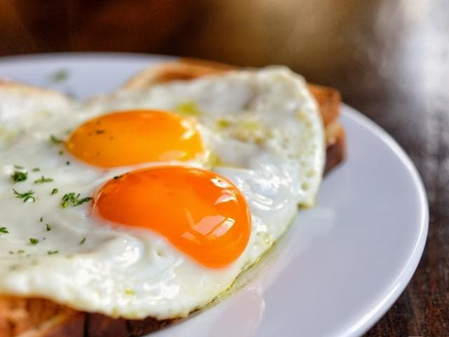

Como freir un huevo

Los huevos fritos se fríen solamente de un lado, para que la yema quede líquida y pueda ser untada con pan. Aunque su procedimiento de cocción parezca sencillo, hay muchas personas que los dejan muy crudos o demasiado cocidos, por lo que la yema se endurece y ya no hay vuelta atrás. Por tanto, échale un vistazo a este post para que de ahora en más la cocción sea perfecta.
Ingredientes:
- Huevo
- Aceite
- Sal
- Pimienta
Preparacion
- Coloca 3 cucharadas de aceite para freír o 30g de mantequilla en la sartén y lleva a fuego medio.
- Deja fundir la grasa hasta que comience a chisporrotear Deja fundir la grasa hasta que comience a chisporrotear cuando viertas una gotita de agua. Este truco se emplea para saber si la temperatura del aceite es la adecuada para cocinar el huevo frito perfectamente.
- Rompe el huevo suavemente para que no se deshaga la yema, y déjalo caer sobre la mantequilla o el aceite.
- Baja el fuego a mínimo y deja que se cocine la clara. Cuando esta misma se presente ya blanca pero aun percibas visualmente que está cruda, echa ½ cucharadita de agua sobre la sartén y cúbrela con su correspondiente tapa para que se cocine la yema y la clara se vuelva más firme.
- Retira el huevo frito con una espumadera por debajo del mismo cuando percibas que la yema está espesa pero a su vez líquida por dentro.
- Sirve de inmediato y acompáñalo con pan fresco o tostado, arroz al estilo cubano, bifes con cebolla, frijoles, salchichas, etcétera.
Volver Arriba
Volver Atras